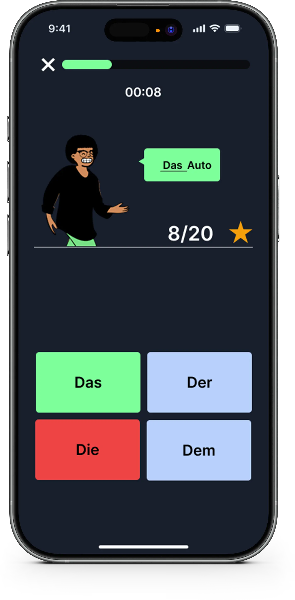
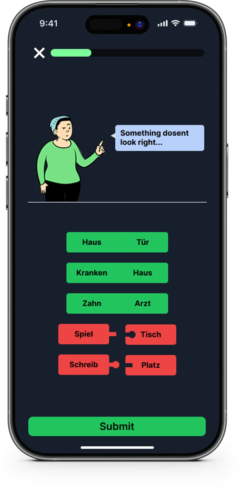

The four German cases feel arbitrary
Nominative, accusative, dative, genitive — most learners memorize tables without ever understanding the logic, so nothing sticks beyond week two.
Built for English speakers who've struggled with German cases and grammar rules — GermanGenie guides you through a structured, puzzle-based learning path so progress feels tangible every day.
The Problem
You're not bad at learning. It's just that German grammar is a genuine challenge, and most learning platforms don't treat it that way.
Nominative, accusative, dative, genitive — most learners memorize tables without ever understanding the logic, so nothing sticks beyond week two.
Verbs flipped to the end, separable prefixes, sentences that rearrange with every conjunction. English intuition actively works against you here.
Duolingo and Babbel bury grammar in footnotes. GermanGenie puts it center stage — because without grammar, fluency is just memorizing phrases.


The Solution
GermanGenie is built around grammar — not vocabulary lists or travel phrases. Every lesson connects logically to the last.
Each grammar concept is a puzzle piece. Complete a topic, unlock the next. You always know exactly where you stand and what comes next.
Explanations reference English grammar directly — so your existing instincts work for you rather than against you.
Every mistake comes with a full explanation — not just a red cross. Understand why something is wrong so it doesn't happen again.
How It Works
A quick placement check tells GermanGenie exactly where to begin — whether that's absolute zero or picking up where you left off on another app.
Work through structured lessons on cases, verb conjugation, and word order. Each finished module snaps visibly into your learning path — like a puzzle piece clicking into place.
As your puzzle fills in, German grammar becomes genuinely functional. Abstract rules become second nature — and you can see exactly how far you've come.
Reviews
I spent two years on other apps and still couldn't construct a proper German sentence. After six weeks with GermanGenie, the cases actually made sense for the first time.
The puzzle structure kept me coming back every day. I could actually see my progress — it wasn't just a streak counter, it was a real map of what I'd genuinely learned.
As someone who failed German in school, I was skeptical. The English-first explanations made everything click. I'm now preparing for my B1 exam.
FAQ
No prior German is required. GermanGenie starts from absolute zero and builds systematically. A short placement check at the start ensures you begin at exactly the right level.
Grammar is the foundation, but GermanGenie also covers vocabulary, reading comprehension, and sentence construction — all taught through the lens of grammar so everything connects logically.
Most apps prioritize vocabulary and conversational phrases. GermanGenie puts grammar center stage, with English-specific explanations that help you understand the structure of the language — not just memorize it.
Yes. GermanGenie covers all four German grammatical cases — nominative, accusative, dative, and genitive — with dedicated modules for each, plus lessons on how they interact in full sentences.
Most learners report noticeably improved grammar confidence within 3–4 weeks of consistent use (15–20 minutes per day). The puzzle-based structure makes progress visible from day one.
Join thousands of English speakers who stopped struggling with German grammar — and started actually understanding it.